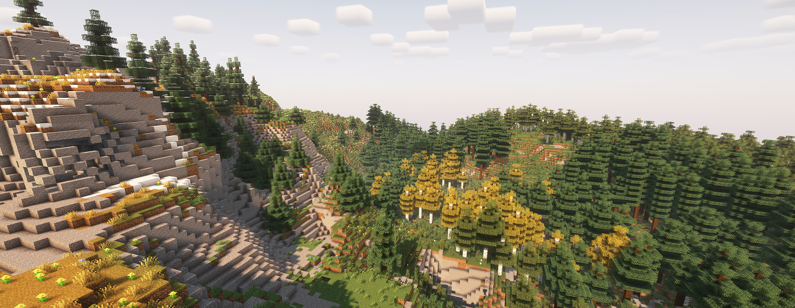

Наши любимцы
Ваша любимая донатная помойка!
В заключении хочется сказать, что люди без должного таланта к анализу собственных действий за работой ПК не смогут постичь сего гения использования Линукс базированной операционной системы.
Люди без технической смекалки или просто люди с полным отсутствием мозгов не смогут сообразить, как настроить свою операционную систему. И уж тем более - как установить новую. И это крайне прискорбно, ведь как доказывает наука - даже частичное наличие мозгов - способно сделать из человека компьютерного мастера с вызовом на дом.
Никогда в истории ещё не было такого, чтобы пингвины летали, но Линукс достигает невозможного с его оптимизацией! “Два лося сидят на линуксе, а ты нет” - Конфуций, 471 г. до н.э.

В заключении хочется сказать, что люди без должного таланта к анализу собственных действий за работой ПК не смогут постичь сего гения использования Линукс базированной операционной системы.
Люди без технической смекалки или просто люди с полным отсутствием мозгов не смогут сообразить, как настроить свою операционную систему. И уж тем более - как установить новую. И это крайне прискорбно, ведь как доказывает наука - даже частичное наличие мозгов - способно сделать из человека компьютерного мастера с вызовом на дом.
Никогда в истории ещё не было такого, чтобы пингвины летали, но Линукс
достигает невозможного с его оптимизацией! “Два лося сидят на линуксе, а ты нет” - Конфуций, 471 г. до н.э.
- Установка Debian
- Настройка системы
- Установка программ
sudo apt install flatpak
sudo apt install plasma-discover-backend-flatpak
flatpak remote-add --if-not-exists flathub https://dl.flathub.org/repo/flathub.flatpakrepoВ заключении хочется сказать, что люди без должного таланта к анализу собственных действий за работой ПК не смогут постичь сего гения использования Линукс базированной операционной системы.
Люди без технической смекалки или просто люди с полным отсутствием мозгов не смогут сообразить, как настроить свою операционную систему. И уж тем более - как установить новую. И это крайне прискорбно, ведь как доказывает наука - даже частичное наличие мозгов - способно сделать из человека компьютерного мастера с вызовом на дом.
Никогда в истории ещё не было такого, чтобы пингвины летали, но Линукс
достигает невозможного с его оптимизацией! “Два лося сидят на линуксе, а ты нет” - Конфуций, 471 г. до н.э.
- Установка Debian
- Настройка системы
- Установка программ
Heading 2
Heading 3
Начать В заключении хочется сказать, что люди без должного таланта к анализу собственных действий за работой ПК не смогут постичь сего гения использования Линукс базированной операционной системы. Люди без технической смекалки или просто люди с полным отсутствием мозгов не смог
Люди Люди
Люди
Люди
Люди
d
Люди и люди dsfdf